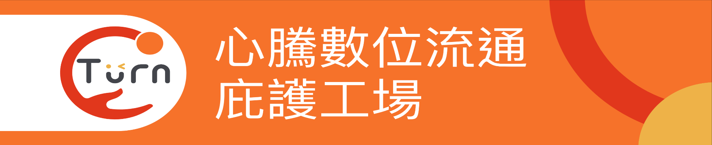
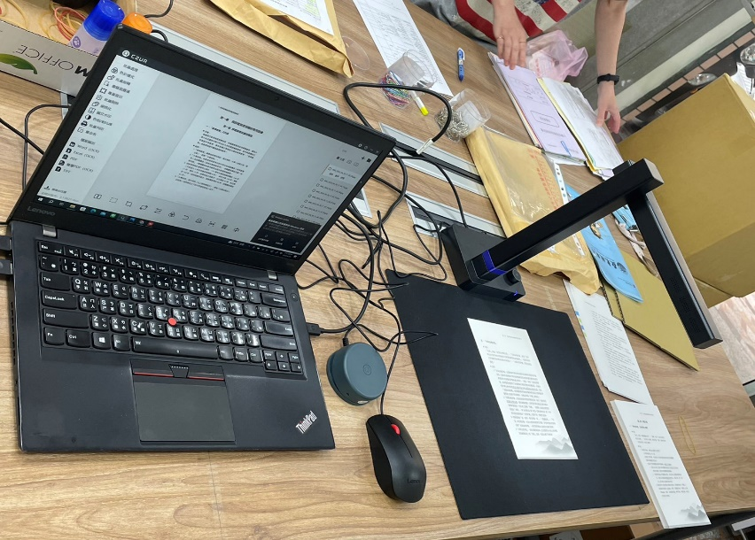
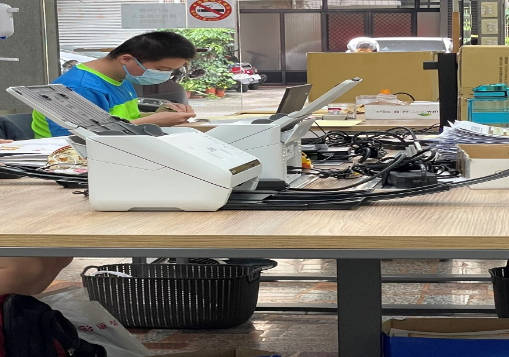

01
資料分散
規章、案例、表單、會議紀錄與範本散落於不同系統及個人資料夾。
從數位典藏與資料整備出發，以 MCP 串接規章、案例、範本、資料與作業工具，建立可治理、可追溯、可持續維護的 AI 工作系統。
規章、案例、表單、會議紀錄與範本散落於不同系統及個人資料夾。
同仁反覆搜尋依據、複製舊案、比對格式，時間用在搬運資訊。
新進與資深人員在事實整理、依據連結、理由敘述上出現落差。
缺件、引用過期、理由不完整與格式差異，增加退修及決策風險。
案件或任務量穩定，同一組步驟反覆發生，人工時間可被量測。
已有文件、系統資料、歷史案例或範本，且來源與權限可以釐清。
判斷依據、檢核點與例外情況可由資深人員說明並逐步驗證。
成果有固定欄位、結構、格式或品質標準，可比較導入前後差異。
AI 先提供草稿與依據，最後仍有明確的專業審查與責任歸屬。
資料彙整、依據查找、草稿形成、格式與引用檢核。
資格檢核、評分依據、差異比較、審查意見初稿。
證據對照、缺件提醒、指標判讀、改善追蹤。
條款比對、風險提示、規格一致性與履約文件檢查。
問題分類、知識檢索、回覆草稿、轉介與案件紀錄。
新人引導、標準作業查詢、案例學習與經驗傳承。
紙本、影像、錄音、舊檔案
掃描、OCR、轉錄與切分
命名、欄位、metadata 與關聯
正確性、去識別、權利與版本
文件庫、索引、搜尋與權限
受控檢索、工具調用與工作流
掃描只是第一步；命名、metadata、品質驗證、權限與版本，才決定資料能否進入 MCP 與 AI 工作流。



承接大型非營利組織長期機密文件數位化
分類 → 掃描 → 命名 → 建資料夾 → 上傳／儲存 → 後續處理
掃描正確、影像品質、檔名與資料夾、優化與複核
把細緻、重複且可拆解的工作，轉化為身心障礙者可參與的職務
數位化＋metadata＋品質驗證＋權限標記＋可追溯交付
→ 接上文件庫、索引、MCP 與 Agent
安全提醒｜既有開放式作業環境未必適合高敏感資料；須依機密等級增設門禁、隔離區、帳號權限、操作紀錄與媒體控管。
它把資料、提示與工具包成清楚的服務，讓不同的 MCP 相容 Agent 在權限範圍內找到正確內容、執行指定作業，並留下可追溯結果。
因此，資料整理仍是基礎；MCP 的差異在於把這些內容變成「有權限、有規格、有輸出格式」的共用服務。
業務人員以瀏覽器或核准的輕量介面登入，不必每人購買完整 Agent。
身分驗證、角色權限、流量限制、輸入輸出檢查。
管理標準提示、工作流、模型調用、用量額度與敏感資料遮罩。
確認事實、依據與判斷理由，承擔專業與管理責任。
確認目的、載體、資料範圍與輸出要求
人員掃描、OCR、轉錄並整理事實與證據
人機協作檔名、metadata、版本與缺漏檢查
人機協作查找有效規章、知識與相似案例
人機協作依核准結構產生可查證初稿
人機協作影像、文字、引用、欄位與一致性
人機協作專業判斷、簽核、送出與留存
人員第一階段禁止自動執行：不得由 Agent 自動作成高風險決定、直接寫回正式系統，或未經覆核即對外送出。
保留原始載體、檔名、產製資訊、使用權利與數位化品質紀錄。
公開、內部、敏感資料分級；以角色與任務範圍授權。
規章、案例、範本與數位檔均標示版本、效期、主管人與更新紀錄。
保留掃描複核、查詢、工具調用、引用與人工修改；定期抽查偏差。
確認原始載體、數量、敏感度、權利、數位化現況、退修原因與基準時間。
抽樣掃描／OCR／命名／metadata／品質複核；建立只讀 Resources、Prompts 與 Tools。
以去識別歷史任務進行人工作業與 AI 協作對照，不影響正式業務運作。
比較效率、典藏品質、引用正確與跨人員一致性，決定修正、擴大或停止。
去識別歷史資料｜只讀服務｜不寫回正式系統｜不自動對外送出
流程、專業邏輯、版本與範本治理
Resources、Prompts、Tools、索引與權限
測試、驗收、文件與教育訓練
使用現成 Agent，不另開發任務操作網站；仍須計入部署與整合工作。
不只是做網站；還包含後端服務、AI協作引擎及模型治理。
| 階段／科目 | 內容 | 萬元 |
|---|---|---|
| 開發建置期｜一次性 | 112.0 | |
| 共同專業底座 | 流程、資料治理與MCP | 80.0 |
| A特有建置 | 5端點部署、連線與測試 | 7.0 |
| 開發期AI費 | 5人測試帳號 | 2.0 |
| 資安費 | 架構審查、弱掃與API檢核 | 15.0 |
| 業務費 | 訪談、會議、教材與差旅 | 8.0 |
| 上線後第一年｜經常性 | 22.0 | |
| Agent帳號 | 5人 × 1,500元 × 12月 | 9.0 |
| 系統維護 | MCP、監控與版本維護 | 8.0 |
| 內容與支援 | 資料更新、品質抽查與客服 | 5.0 |
| 直接成本 | 建置112＋營運22 | 134.0 |
| 管理費 | 直接成本 × 10% | 13.4 |
| 雜費 | 直接成本 × 5% | 6.7 |
| 營業稅 | 稅前金額 × 5% | 7.7 |
| 階段／科目 | 內容 | 萬元 |
|---|---|---|
| 開發建置期｜一次性 | 140.0 | |
| 共同專業底座 | 流程、資料治理與MCP | 80.0 |
| B特有建置 | 網站、Runtime與模型治理 | 33.0 |
| 開發期AI費 | 模型串接與測試Token | 3.0 |
| 資安費 | 模型閘道、遮罩、弱掃與日誌 | 16.0 |
| 業務費 | 訪談、會議、教材與差旅 | 8.0 |
| 上線後第一年｜經常性 | 24.0 | |
| 中央AI用量 | 中情境Token年度上限 | 10.0 |
| 系統維護 | 網站、Runtime、MCP及監控 | 9.0 |
| 內容與支援 | 資料更新、品質抽查與客服 | 5.0 |
| 直接成本 | 建置140＋營運24 | 164.0 |
| 管理費 | 直接成本 × 10% | 16.4 |
| 雜費 | 直接成本 × 5% | 8.2 |
| 營業稅 | 稅前金額 × 5% | 9.4 |